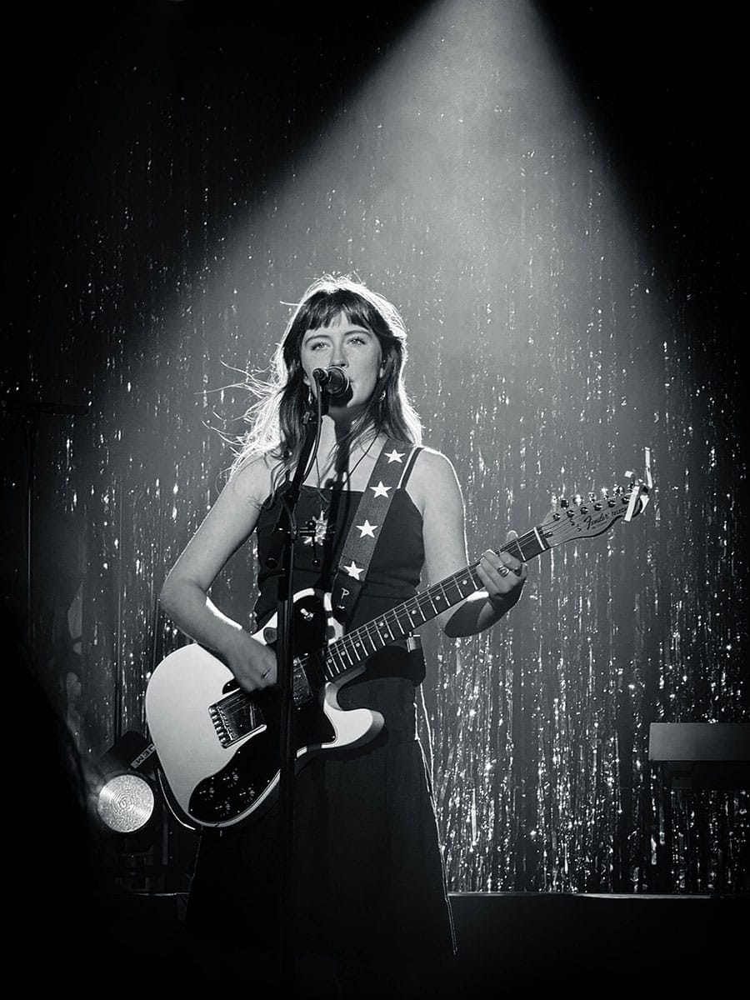
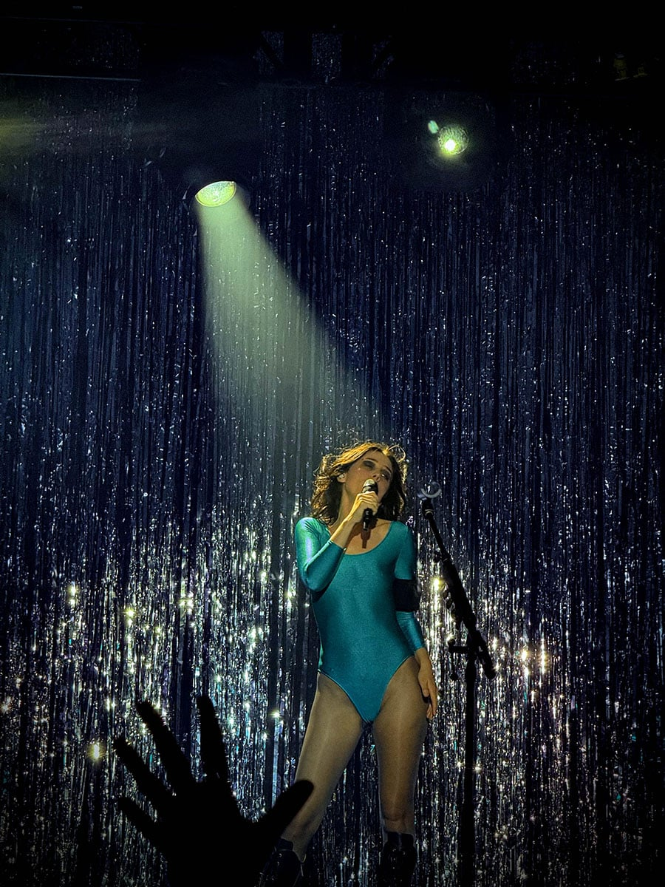
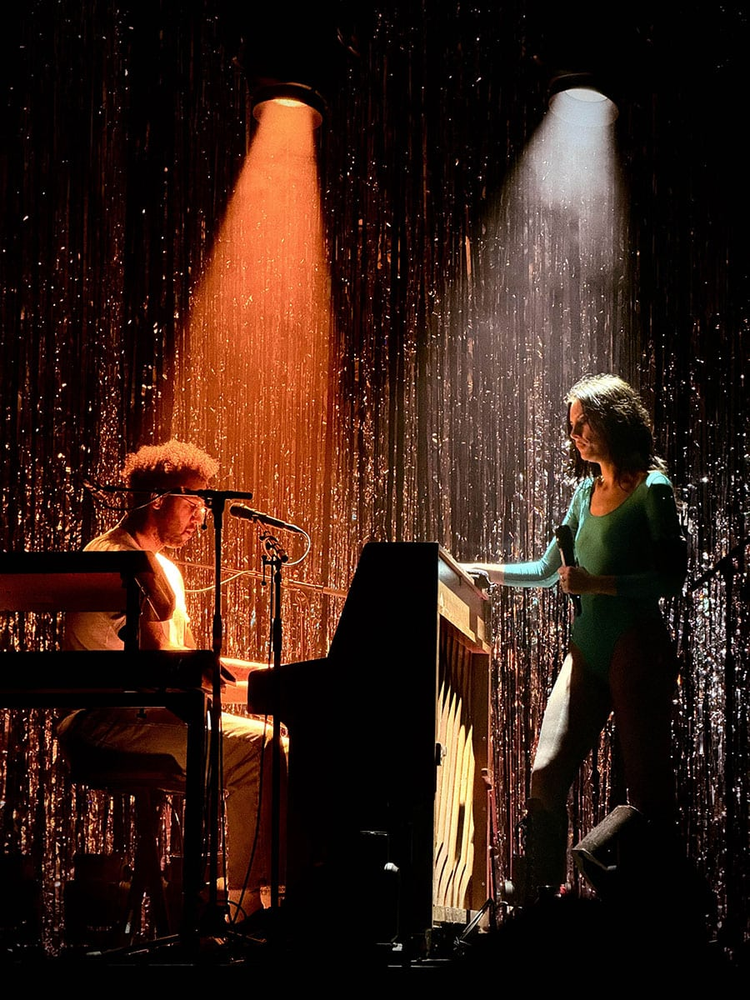
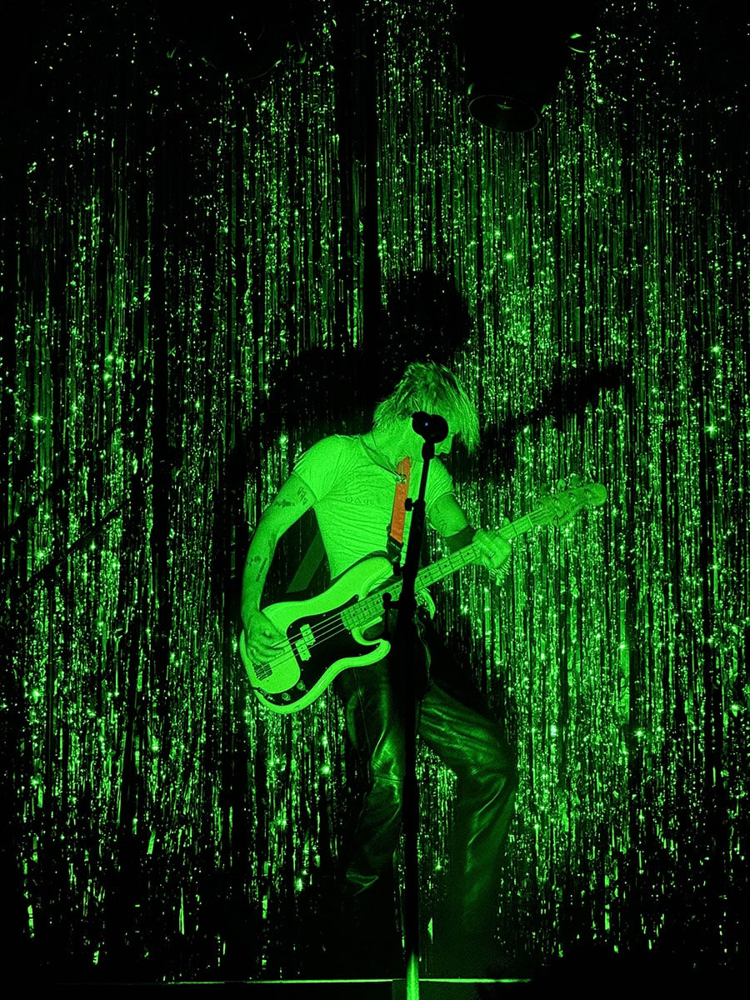

What do I do?
I work across UI, web, and visual design, mostly through personal and academic projects. I enjoy the part of the process where ideas start messy and slowly take shape through layout, type, and visual structure. I try to understand what I'm designing before deciding how it should look. That usually means asking questions, experimenting, and reworking things more than once until they make sense. I have a master's degree in Graphics Technology and have experience through a UI/UX internship and independent projects. Most of what I've learned comes from doing the work and figuring things out along the way. Outside of design, I like playing games, traveling, going to concerts, sketching, and taking photos.

Work
Graphic design


UI Design


Photography







